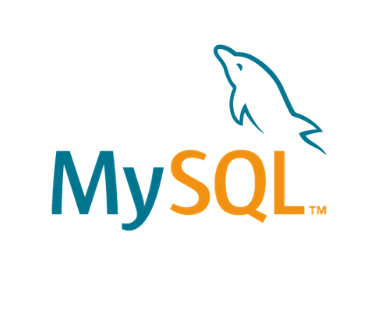

Profile
Operations analyst – also responsible for handling the company’s financial reports and analysis, I have proactively learnt to use Javascript, Python and SQL programming languages to perform more efficiently in my current role, which requires handling, processing and analysing large amounts of data. I am always looking for new ways to streamline and improve processes. This has ranged from identifying and then addressing errors that occur frequently, to creating new reports, or suggesting and tracking new KPI’s.I have also obtained the certified Cloud practitioner qualification, and I am doing side projects in my own time to improve my skills within the Cloud. I have improved processes in various departments throughout the business, both through automating jobs that were previously very labour intensive and providing new information and reports which have further enhanced efficiency. I have been credited with improving departments to such an extent, that I have been asked to coach others. I believe that my experience shows me to be a resourceful, highly competent and dependable person who is constantly looking to learn and improve.
Key Skills



- Programming – Confident user: SQL, JavaScript & Python. Learning: YAML, Bash scripting.
- Software – AWS Console & CLI, VScode, Github, Microsoft Office Pack (Advanced user, including Excel), Power BI, Microsoft Dynamics NAV/AX.
- Communication – Excellent written and verbal communication
- Accountancy – CIMA (Part qualified), Experience in forecasting and financial reporting